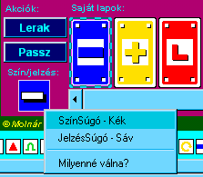

|
|
... ha nem rajtunk a sor, de lehet vétózni?
[Most az a játékos van soron, aki ki van jelölve a Játékoslistán]
 Megvétózhatjuk a lerakott lapot ha tudjuk:
Megvétózhatjuk a lerakott lapot ha tudjuk:
- Most nem mi következünk, de az utoljára lerakott lap megvétózható, azaz
 tulajndonságú. Vétójoga van mindenkinek,
akinek van vele színben és jelzésben megegyezõ kártyája (vagy hozzá hasonuló metaszínû/-jelzésû, ld. KártyaSúgó). Ha van ilyen kártyánk és vétózni szeretnénk vele: tulajndonságú. Vétójoga van mindenkinek,
akinek van vele színben és jelzésben megegyezõ kártyája (vagy hozzá hasonuló metaszínû/-jelzésû, ld. KártyaSúgó). Ha van ilyen kártyánk és vétózni szeretnénk vele:
- Jelöljük ki a kártyát rákattintással
- Nyomjuk meg a [Vétó!] gombot.
Igyekezzünk a vétózással, mert nem sok idõnk van rá!
-
Vétózáskor tõlünk folytatódik a játék. Ha a jelzés csak egyszer vétózható (nem
 tulajdonságú - ld. JelzésSúgó), akkor
annak speciális jelentése nem érvényesül. Ha viszont többször is vétózható, akkor a jelentése számunkra fog érvényesülni (hacsak valaki ismét meg nem vétózza). tulajdonságú - ld. JelzésSúgó), akkor
annak speciális jelentése nem érvényesül. Ha viszont többször is vétózható, akkor a jelentése számunkra fog érvényesülni (hacsak valaki ismét meg nem vétózza).
Bármikor kiszállhatunk a játékból a jobboldali kék Játékpanelen lévõ [Kiszáll] gomb megynyomásával.
Cseveghetünk a többi játékossal a Csevegõ használatával.
Szín- és JelzésSúgó behívása egy kártyához:
|
Egy kezünkben lévõ kártyát kijelölve az egérrel megjelenik annak kis négyzetalakú szín/jelzés-piktogramja
a bal oldalon a gombok alatt. Ha odakattintunk az egérrel, megjelenik a KártyaSúgó menü és abból választhatjuk ki.
Hasonlóan kérhetünk Szín/JelzésSúgót az akutális színrõl és jelzésrõl (az esetleges kért színrõl vagy jelzésrõl is), illetve a jelzéslapról: a hozzájuk
tartozó kis négyzetalakú piktogramra kattintva jelenik meg a hozzájuk tartozó KártyaSúgó menü.
|

|
|
|

 Bevezetõ |
Bevezetõ |
 Szabályok |
Szabályok |
 Súgó |
Súgó |
 Paklik
Paklik